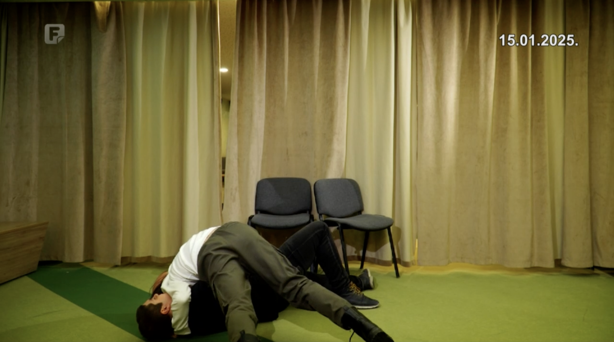

Web razvojWeb development
HTML, CSS, osnovni JavaScript, responzivni dizajn.HTML, CSS, basic JavaScript, responsive design.
HTMLCSSJS
Student kompjuterskih nauka i entuzijasta za web programiranje. Computer Science student and a web development enthusiast.
Kratak uvod u mene: biografija, interesi i ciljeve. A short introduction to who I am: biography, my interests and my goals.
Student sam kompjuterskih nauka na Prirodno-matematičkom fakultetu u Sarajevu (PMF), gdje trenutno gradim snažnu osnovu iz matematike i računarstva.I’m a Computer Science student at the Faculty of Science in Sarajevo (PMF), currently building a strong foundation in both mathematics and computing.
Rođen sam 07.09.2006. u Teheranu, Iran. Otac mi je Bosanac (porijeklom iz Višegrada), a majka Turkinja iz Kırıkkale; oboje su doktori nauka iz perzijskog jezika i književnosti.I was born on 07/09/2006 in Tehran, Iran. My father is Bosnian (originally from Višegrad), and my mother is Turkish from Kırıkkale; both hold PhDs in Persian language and literature.
Imam pet godina stariju sestru Fatmu Hanu. Nakon što sam završio vrtić u Teheranu, sa svojih 5 godina, porodica i ja smo se preselili u Sarajevo (Novi Grad), gdje sam nastavio školovanje. Osnovnu školu Osman Nakaš pohađao sam od 2017. do 2021. godine, zatim Drugu gimnaziju u Sarajevu od 2021. do 2025., a od 2025. godine sam student na PMF-u.I have an older sister, Fatma Hana, who is five years older than me. After finishing kindergarten in Tehran, at 5 years of age, my family and I moved to Sarajevo (Novi Grad), where I continued my education. I attended Osman Nakaš Primary School from 2017 to 2021, then Second Gymnasium in Sarajevo from 2021 to 2025, and I have been studying at PMF since 2025.
U programiranju me posebno privlači web razvoj — volim praviti moderne, responzivne i vizuelno čiste stranice i aplikacije, uz fokus na dobar UX, pristupačnost i jasnu strukturu koda. Pored toga, interesuju me algoritmi i diskretna matematika, kao i način na koji se teoretske ideje pretvaraju u praktična rješenja. Trenutno najviše radim na proširivanju znanja iz analize, algoritama, web programiranja i osnova umjetne inteligencije.In programming, I’m especially drawn to web development — I enjoy creating modern, responsive, visually clean websites and applications with a focus on good UX, accessibility, and a clear code structure. I’m also interested in algorithms and discrete mathematics, and in how theoretical ideas turn into practical solutions. At the moment, I’m mainly expanding my knowledge in mathematical analysis, algorithms, web programming, and the fundamentals of AI.
U slobodno vrijeme treniram stoni tenis (oko 3 godine) i redovno učestvujem na open turnirima. Cilj mi je da se razvijam kao programer kroz projekte i kontinuirano učenje. Dugoročno želim postati pouzdan i svestran developer koji može samostalno iznijeti projekat od ideje do gotovog proizvoda, te raditi na rješenjima koja imaju stvarnu vrijednost i jasnu svrhu. Posebno mi je važno razviti disciplinu, dosljednost i “inženjerski” način razmišljanja — da svaka odluka u kodu ima smisao, da je rješenje održivo, a kvalitet vidljiv i u detaljima.In my free time, I train table tennis (around 3 years) and regularly participate in open tournaments. My goal is to grow as a developer through projects and continuous learning. In the long term, I want to become a reliable and versatile developer who can take a project from an idea to a finished product, and work on solutions that have real value and a clear purpose. What matters most to me is developing discipline, consistency, and an engineering mindset — making thoughtful decisions in code, building maintainable solutions, and caring about quality down to the smallest details.
Tehničke vještine, jezici i druge sposobnosti. Technical skills, languages and other abilities.
HTML, CSS, osnovni JavaScript, responzivni dizajn.HTML, CSS, basic JavaScript, responsive design.
C++, QBasic, Python – koncepti programiranja i algoritmi.C++, QBasic, Python – fundamentals and algorithms.
Git, VS Code, rad u timskom okruženju.Git, VS Code, basic teamwork workflows.
Osnove 3D modeliranja i animacije — Blender.Basics of 3D modeling and animation — Blender.
Klikni na karticu da proširiš detalje.Click a card to expand details.
Studij kompjuterskih nauka sa naglaskom na matematiku.Computer Science studies with a strong focus on mathematics.
Opšta gimnazija, uz takmičenja iz matematike, filozofije i sporta.General high school with competitions in mathematics, philosophy, and sports.
Osnovno obrazovanje uz takmičenja iz matematike, informatike i fizike.Primary education with competitions in mathematics, informatics, and physics.
Klikni “Detaljnije” za popup.Click “More details” for a popup.
Maturski rad iz matematike (2025) o osnovama kriptografije i primjeni teorije brojeva u modernim kriptosistemima. A Mathematics graduation paper (2025) on cryptography fundamentals and how number theory powers modern cryptosystems.
Kratki 3D animirani klip koji sam napravio u Blenderu. Modelirao sam jednostavnog “robot psa”, postavio materijale i svjetla, a zatim sve renderovao u video. A short 3D animated clip made in Blender. I modeled a simple “robot dog”, set up materials and lighting and rendered the final video.
U sklopu školskog rada pripremili smo prilog za Federalnu televiziju: izveli smo svoju verziju djela “Čekanje Godota”. As part of a school project, we prepared a feature for Federal Television: we performed our own version of “Waiting for Godot”.
Klik na karticu otvara novi tab.Click a card to open a new tab.
Kratak pregled kako nastaje moderna web stranica i šta znači “dobar” front-end.A short overview of how modern websites are built and what makes a “good” front-end.
Pročitaj više →Read more →AI je postao dio svakodnevnice — od preporuka na internetu do pametnih asistenata.AI is now part of daily life — from online recommendations to smart assistants.
Pročitaj više →Read more →Mali vodič kroz osnovne navike koje štite naloge i podatke.A small guide to basic habits that protect accounts and data.
Pročitaj više →Read more →Ručno prebacivanje strelicama ili tačkama. Manual navigation with arrows or dots.


Kratak audio zapisA short audio clip
Slobodno me kontaktirajte za saradnju ili pitanja.Feel free to contact me for cooperation or questions.
Email:Email: fatihefeememisevic@gmail.com
GitHub:GitHub: github.com/brodude456
LinkedIn:LinkedIn: linkedin.com/in/fatih-efe-memisevic-bab1361b8/
Linktree:Linktree:linktr.ee/tifah_efendija
Kriptografija (od starogrčkog: kryptós – “skriven, tajan” i graphein – “pisati”), kao znanstvena disciplina, bavi se metodama osiguranja komunikacije kroz šifriranje podataka, čime se štiti privatnost i integritet informacija u prisutnosti potencijalnih prijetnji. U ovom projektu (maturskom radu) sam objasnio kako se kriptografija razvijala od ranih metoda zaštite poruka do algoritama koji danas štite digitalnu komunikaciju i transakcije. Također sam obradio matematičko predznanje iz teorije brojeva i povezao ga s kriptografskim idejama: polja ℤp, prošireni Euklidov algoritam, Ojlerovu funkciju i teoremu, kineski teorem o ostatcima, te problem diskretnog logaritma. Cryptography (from Ancient Greek: kryptós — “hidden, secret” and graphein — “to write”) is a scientific discipline focused on securing communication through data encryption, protecting privacy and integrity in the presence of threats. In this project (my graduation paper), I explained the evolution of cryptography from early substitution methods to modern algorithms that secure digital communication and transactions. I also covered core number-theory foundations and connected them to cryptographic ideas: fields ℤp, the extended Euclidean algorithm, Euler’s totient function and theorem, the Chinese remainder theorem, and the discrete logarithm problem.

U ovom projektu sam u Blenderu napravio kratku animaciju: model (robot pas) je sastavljen od jednostavnih oblika, dodani su materijali i osvjetljenje, a kretanje je animirano keyframe-ovima. Finalni rezultat je renderovan kao video. In this project I created a short Blender animation: the model (robot dog) is built from simple shapes, with materials and lighting set up, and movement animated via keyframes. The final result was rendered as a video.
U ovom projektu sam učestvovao u izvedbi naše verzije “Čekanja Godota” i u kratkom osvrtu gdje govorim o svom doživljaju djela u kontekstu teme, atmosfere i poruke. U završnici izvedbe nalazi se i kratka fight scena u kojoj demonstriram jiu-jitsu takedown tehniku. In this project I took part in performing our version of “Waiting for Godot” and in a short on-camera reflection where I share my interpretation in terms of context, theme, atmosphere, and message. Near the end, there is also a brief fight scene featuring a jiu-jitsu takedown technique.
